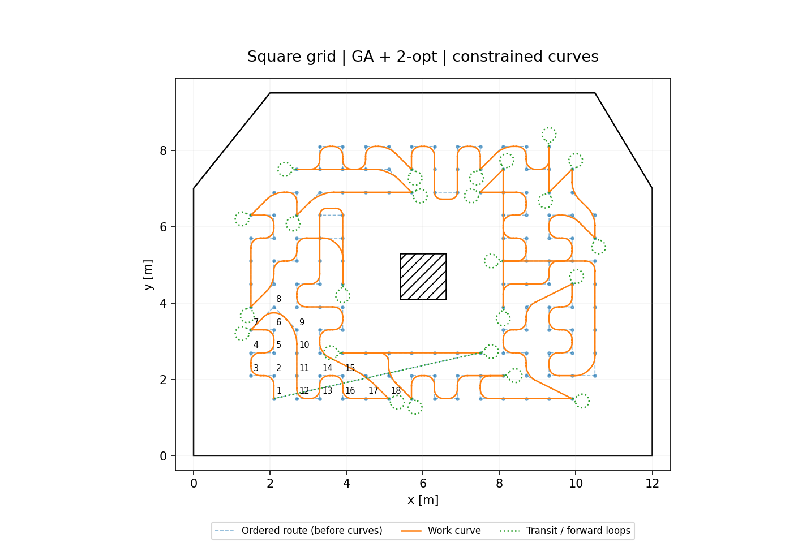
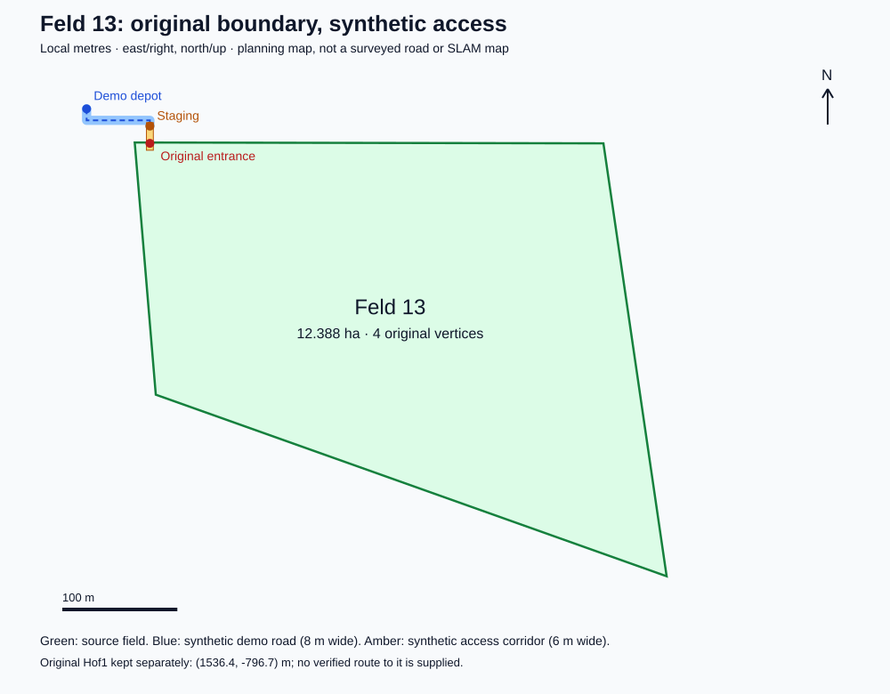

布伦瑞克工业大学 · 硕士
Fahrzeugtechnik und mobile Systeme（车辆技术与移动系统）
项目方向：农业机器人、路径规划、机器人任务执行与仿真。
Fahrzeugtechnik und mobile Systeme（车辆技术与移动系统）
项目方向：农业机器人、路径规划、机器人任务执行与仿真。
车辆工程
三个项目分别关注覆盖任务如何规划、多机器人如何协同作业，以及既定计划如何在线执行。前两个项目提供可交互的结果回放和验证说明。

在相同田块上比较方格与三角格，利用 Greedy、MST–Euler、GA 等策略生成覆盖访问顺序；再保留原任务顺序，构造满足转弯半径、速度与加速度约束的连续运动参考。
交互页面可查看具体节点序列、原始折线、Bézier 平滑与前进回环掉头，并对照面积覆盖和任务时间。
算法与网格对比 · 交互轨迹回放 →
一台母车运送三台机器人进入田间，完成部署、条带作业、按资源返航补给、断点续作和全员回收返仓。独立 Java 核心以规则调度和有限状态机组织整个任务闭环。
打开实际运行记录：在同一时间轴上查看地图、整体调度行为树解释视图、具体 Agent 状态机与事件。标准场景仿真时长 82.06 分钟，3 / 3 台机器人完成回收。
交互地图 · 完整调度树 · Agent 状态机 →将离线覆盖计划组织为分段任务，通过 ROS 2 / Nav2 执行，并研究动态障碍下的等待、局部恢复、任务调整及未完成区域记录。
与项目 01 的参考轨迹回放区分：本项目关注在线系统与任务监督。对应版本的仿真视频和日志还需独立整理。
系统概述 →数据分析与处理。
中文 · 母语
德语 · telc C1
英语 · CET-6
网格表示、全覆盖任务排序、图搜索、曲线生成、运动学约束与时间参数化。
ROS 2 通信与系统集成、行为树、状态机、Gazebo 仿真及任务日志分析。
Python 实验工具、可视化界面、配置化对比、自动测试与保存结果复验。
欢迎交流机器人路径规划、任务决策及系统集成相关工作。
本网站展示研究原型与仿真材料；没有将计划中的机械臂扩展列为已完成成果。